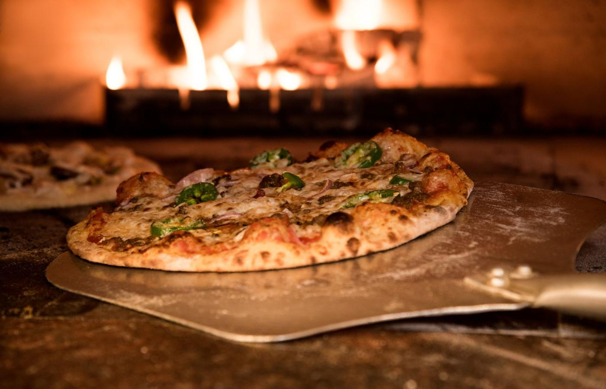
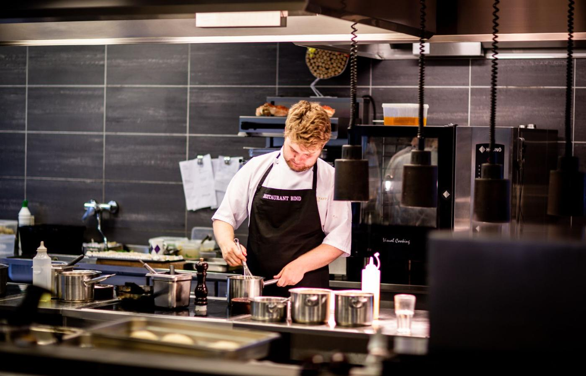
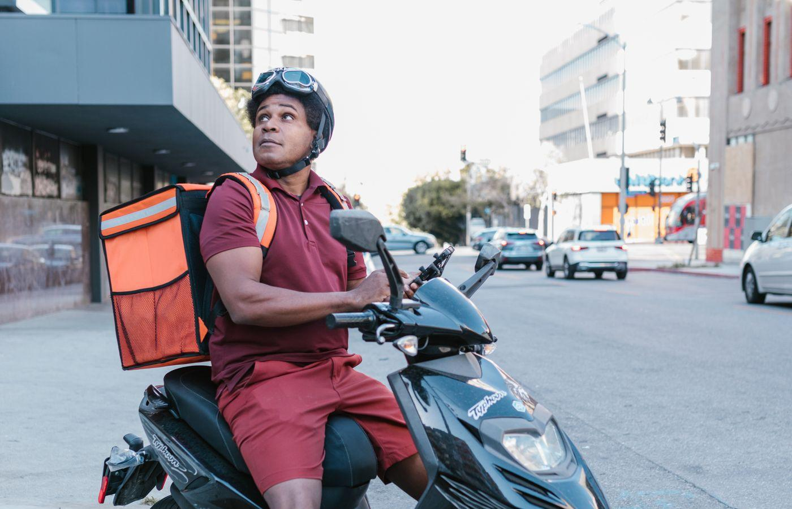
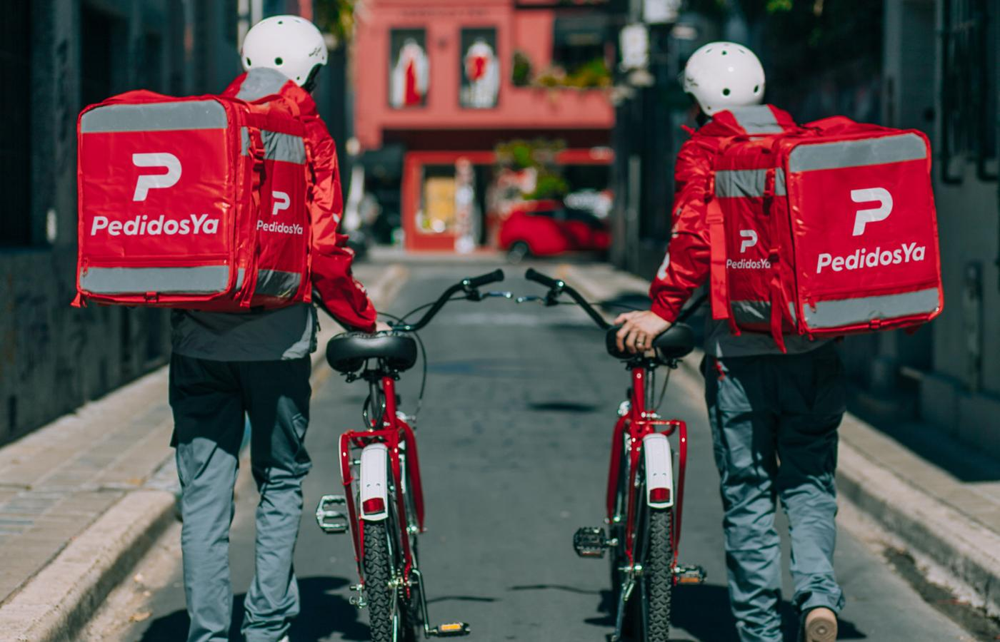

<meta charset="utf-8">
<meta name="viewport" content="width=device-width,initial-scale=1,viewport-fit=cover">
<meta name="robots" content="noindex,nofollow">
<title>Big Pizza · Cómo se maneja un pedido</title>
<meta name="theme-color" content="#0B0B0C">
<link rel="apple-touch-icon" href="/apple-touch-icon.png">

<!--
  GUÍA PARA LAS 3 SUCURSALES — 11-ago-2026
  Maxi: "que los empleados puedan verlo, entenderlo y sobre todo le den ganas de
  hacerlo". De ahí las decisiones:
   · Los íconos y los nombres de los botones son EXACTAMENTE los del panel
     (copiados de bot/public/admin.html): si acá dice otra cosa, la guía miente.
   · La tarjeta de pedido de la sección 2 es de mentira pero SE TOCA y avanza
     igual que la de verdad. Se aprende haciendo, no leyendo.
   · Nada con esquina viva, superficies translúcidas y fotos que respiran
     (Ken Burns lento): es el sistema visual de la casa.
   · `prefers-reduced-motion` apaga todo el movimiento y devuelve lo invisible
     a la vista. Sin eso, quien tenga esa opción prendida no ve la mitad.
-->

<style>
  *{margin:0;padding:0;box-sizing:border-box}
  :root{
    --bg:#0B0B0C; --sup:rgba(255,255,255,.055); --linea:rgba(255,255,255,.12);
    --txt:#F3F1EE; --mut:#A19C94; --mut2:#6C675F;
    --nar:#F7941D; --nar-b:rgba(247,148,29,.14); --nar-l:rgba(247,148,29,.42);
    --peya:#FA0050;
    --r:24px; --pill:999px;
  }
  html{scroll-behavior:smooth}
  body{background:var(--bg);color:var(--txt);line-height:1.5;
    font-family:-apple-system,BlinkMacSystemFont,'Segoe UI',Roboto,sans-serif;
    -webkit-font-smoothing:antialiased;overflow-x:hidden}
  .env{max-width:600px;margin:0 auto;padding:0 18px}

  /* ── Portada: la foto respira y el texto flota encima ─────────────────── */
  .tapa{position:relative;min-height:86svh;display:flex;align-items:flex-end;
    overflow:hidden;isolation:isolate}
  .tapa .foto{position:absolute;inset:0;z-index:-2}
  .tapa .foto img{width:100%;height:100%;object-fit:cover;
    animation:respirar 26s ease-in-out infinite alternate}
  .tapa::after{content:"";position:absolute;inset:0;z-index:-1;
    background:linear-gradient(to top,var(--bg) 6%,rgba(11,11,12,.72) 46%,rgba(11,11,12,.25) 100%)}
  @keyframes respirar{from{transform:scale(1.06) translateY(0)}to{transform:scale(1.16) translateY(-14px)}}

  .tapa .env{padding-bottom:46px;width:100%}
  .marca{display:inline-flex;align-items:center;gap:9px;padding:8px 16px;margin-bottom:22px;
    border-radius:var(--pill);background:rgba(255,255,255,.09);border:1px solid var(--linea);
    backdrop-filter:blur(14px);-webkit-backdrop-filter:blur(14px);
    font-size:12.5px;letter-spacing:.16em;text-transform:uppercase;font-weight:700;color:#fff}
  .marca i{width:8px;height:8px;border-radius:var(--pill);background:var(--nar);display:block}
  h1{font-size:clamp(34px,9vw,46px);line-height:1.03;letter-spacing:-1.6px;font-weight:800}
  h1 em{font-style:normal;color:var(--nar)}
  .bajada{margin-top:16px;font-size:18px;color:#D8D4CE;max-width:30ch}
  .abajo{margin-top:26px;display:inline-flex;align-items:center;gap:10px;font-size:14.5px;color:var(--mut);
    padding:11px 18px;border-radius:var(--pill);background:var(--sup);border:1px solid var(--linea);
    backdrop-filter:blur(14px);-webkit-backdrop-filter:blur(14px)}
  .abajo .pt{width:7px;height:7px;border-radius:var(--pill);background:var(--nar);animation:latir 1.9s ease-in-out infinite}
  @keyframes latir{0%,100%{opacity:.35;transform:scale(.8)}50%{opacity:1;transform:scale(1.25)}}

  /* ── Barra de navegación flotante, en píldora ─────────────────────────── */
  nav{position:fixed;left:50%;transform:translateX(-50%);bottom:calc(14px + env(safe-area-inset-bottom));
    z-index:40;display:flex;gap:4px;padding:6px;border-radius:var(--pill);
    background:rgba(20,20,22,.72);border:1px solid var(--linea);
    backdrop-filter:blur(18px) saturate(1.4);-webkit-backdrop-filter:blur(18px) saturate(1.4);
    box-shadow:0 10px 34px rgba(0,0,0,.55);max-width:calc(100% - 28px)}
  nav a{padding:10px 15px;border-radius:var(--pill);font-size:13.5px;font-weight:600;
    color:var(--mut);text-decoration:none;white-space:nowrap;transition:.25s}
  nav a.on{background:var(--nar);color:#1A1104}
  nav a:not(.on):active{background:rgba(255,255,255,.08)}

  /* ── Secciones ────────────────────────────────────────────────────────── */
  section{padding:82px 0 18px;position:relative}
  .eyebrow{display:inline-block;font-size:12px;margin-top:6px;letter-spacing:.18em;text-transform:uppercase;
    font-weight:700;color:var(--nar);margin-bottom:12px}
  h2{font-size:clamp(27px,7vw,34px);line-height:1.1;letter-spacing:-1px;font-weight:800}
  .txt{margin-top:16px;font-size:17px;color:var(--mut)}
  .txt b{color:var(--txt);font-weight:600}

  /* Foto de sección: entra desde abajo y se acerca despacio */
  .escena{position:relative;height:230px;border-radius:var(--r);overflow:hidden;margin:28px 0 6px;
    border:1px solid var(--linea)}
  .escena img{width:100%;height:100%;object-fit:cover;transform:scale(1.02);
    transition:transform 1.4s cubic-bezier(.2,.7,.3,1)}
  .escena.ver img{animation:acercar 20s ease-in-out infinite alternate}
  @keyframes acercar{from{transform:scale(1.02)}to{transform:scale(1.14)}}
  .escena::after{content:"";position:absolute;inset:0;
    background:linear-gradient(to top,rgba(11,11,12,.85),rgba(11,11,12,.06))}
  .escena .cap{position:absolute;left:16px;right:16px;bottom:14px;z-index:2;font-size:15px;color:#EDEAE5}

  /* Tarjetas translúcidas */
  .caja{background:var(--sup);border:1px solid var(--linea);border-radius:var(--r);padding:22px;margin-top:18px;
    backdrop-filter:blur(10px);-webkit-backdrop-filter:blur(10px)}
  .caja h3{font-size:19px;font-weight:700;letter-spacing:-.3px}
  .caja p{margin-top:7px;font-size:16px;color:var(--mut)}

  /* Pasos numerados */
  .paso{display:flex;gap:15px;padding:15px 0;border-bottom:1px solid rgba(255,255,255,.07)}
  .paso:last-child{border-bottom:0;padding-bottom:0}
  .paso .n{width:31px;height:31px;flex:none;border-radius:var(--pill);background:var(--nar-b);
    border:1px solid var(--nar-l);color:var(--nar);font-weight:700;font-size:15px;
    display:flex;align-items:center;justify-content:center}
  .paso .n.peya{background:rgba(250,0,80,.14);border-color:rgba(250,0,80,.45);color:#FF4E86}
  .paso b{display:block;font-size:16.5px;margin-bottom:2px}
  .paso span{font-size:15px;color:var(--mut)}

  /* Botones del panel, dibujados igual que allá */
  .btns{display:flex;flex-wrap:wrap;gap:9px;margin-top:6px}
  .bt{display:inline-flex;align-items:center;gap:7px;padding:10px 15px;border-radius:var(--pill);
    background:rgba(255,255,255,.06);border:1px solid var(--linea);font-size:14.5px;font-weight:600}
  .bt.nar{background:var(--nar);border-color:var(--nar);color:#1A1104}
  
  .bt svg{width:17px;height:17px;fill:none;stroke:currentColor;stroke-width:1.9;
    stroke-linecap:round;stroke-linejoin:round}
  .quees{margin-top:11px;font-size:15px;color:var(--mut)}
  .quees b{color:var(--txt)}

  /* La tarjeta de pedido que se toca */
  .demo{background:linear-gradient(180deg,rgba(255,255,255,.07),rgba(255,255,255,.03));
    border:1px solid var(--linea);border-radius:var(--r);padding:18px;margin-top:16px}
  .demo .top{display:flex;align-items:center;gap:9px;font-size:14px;color:var(--mut)}
  .demo .chip{padding:5px 12px;border-radius:var(--pill);font-size:12.5px;font-weight:700;
    background:var(--nar-b);border:1px solid var(--nar-l);color:var(--nar);transition:.3s}
  .demo .chip.ok{background:rgba(255,255,255,.08);border-color:var(--linea);color:var(--mut)}
  .demo .quien{margin-top:12px;font-size:19px;font-weight:700}
  .demo .dir{font-size:15px;color:var(--mut);margin-top:2px}
  .demo ul{list-style:none;margin:14px 0 0}
  .demo li{display:flex;align-items:center;gap:10px;padding:7px 0;font-size:16px;cursor:pointer;
    user-select:none;-webkit-tap-highlight-color:transparent}
  .demo li .tk{width:20px;height:20px;flex:none;border-radius:7px;border:1.6px solid rgba(255,255,255,.28);
    display:flex;align-items:center;justify-content:center;transition:.2s}
  .demo li .tk svg{width:12px;height:12px;fill:none;stroke:#0B0B0C;stroke-width:3.4;opacity:0;
    stroke-linecap:round;stroke-linejoin:round}
  .demo li.listo .tk{background:var(--nar);border-color:var(--nar)}
  .demo li.listo .tk svg{opacity:1}
  .demo li.listo{opacity:.45;text-decoration:line-through}
  .demo .pie{display:flex;gap:9px;margin-top:16px;flex-wrap:wrap}
  .demo button{display:inline-flex;align-items:center;gap:7px;padding:11px 17px;border-radius:var(--pill);
    border:1px solid var(--linea);background:rgba(255,255,255,.06);color:var(--txt);
    font-family:inherit;font-size:14.5px;font-weight:600;cursor:pointer;transition:.2s}
  .demo button.pri{background:var(--nar);border-color:var(--nar);color:#1A1104}
  .demo button:active{transform:scale(.97)}
  .demo button svg{width:17px;height:17px;fill:none;stroke:currentColor;stroke-width:1.9;
    stroke-linecap:round;stroke-linejoin:round}
  .pista{margin-top:12px;font-size:14.5px;color:var(--nar);display:flex;align-items:center;gap:8px}
  .pista::before{content:"";width:6px;height:6px;border-radius:var(--pill);background:var(--nar);
    animation:latir 1.9s ease-in-out infinite}

  /* Avisos */
  /* Un solo tipo de cartel. Maxi (11-ago): "no me gustan los colores, un cartel
     verde, otro amarillo, otro rojo. Hacelo con el estilo de Big Pizza, sin
     colores y a lo sumo naranja algunas palabras". */
  .ojo{margin-top:22px;border-radius:20px;padding:18px 20px;font-size:15.5px;color:var(--mut);
    background:var(--sup);border:1px solid var(--linea);border-left:2px solid var(--nar);
    backdrop-filter:blur(10px);-webkit-backdrop-filter:blur(10px)}
  .ojo b{color:var(--txt);font-weight:600}
  .ojo em{font-style:normal;color:var(--nar);font-weight:600}

  /* Entrada de los bloques al aparecer */
  .rev{opacity:0;transform:translateY(26px);transition:opacity .7s ease,transform .7s cubic-bezier(.2,.7,.3,1)}
  .rev.ver{opacity:1;transform:none}

  .fin{padding:52px 0 130px;text-align:center}
  .fin .grande{font-size:23px;font-weight:800;letter-spacing:-.6px}
  .fin p{margin-top:10px;font-size:16px;color:var(--mut)}

  @media (prefers-reduced-motion:reduce){
    *,*::before,*::after{animation:none!important;transition:none!important}
    .rev{opacity:1!important;transform:none!important}
    html{scroll-behavior:auto}
  }
</style>

<!-- ── PORTADA ─────────────────────────────────────────────────────────── -->
<header class="tapa">
  <div class="foto"></div>
  <div class="env">
    <span class="marca"><i></i> Big Pizza</span>
    <h1>Un pedido,<br>de la pantalla<br><em>a la puerta</em></h1>
    <div class="bajada">Cómo se maneja el panel, cómo mandamos los envíos hoy
      y qué va a cambiar en unos días.</div>
    <div class="abajo"><span class="pt"></span> 4 minutos · deslizá para arrancar</div>
  </div>
</header>

<nav id="nav">
  <a href="#panel" class="on">El panel</a>
  <a href="#botones">La tarjeta</a>
  <a href="#demora">La demora</a>
  <a href="#uber">El envío</a>
  <a href="#peya">Lo que viene</a>
</nav>

<!-- ── 1. EL PANEL ─────────────────────────────────────────────────────── -->
<section id="panel" class="env">
  <div class="rev">
    <span class="eyebrow">Primero</span>
    <h2>Todo pasa en una sola pantalla</h2>
    <div class="txt">El pedido entra por WhatsApp, el bot lo toma y aparece <b>solo</b> en
      el panel. Nadie lo carga a mano — y tampoco hay que moverlo: <b>el pedido avanza
      solo con el reloj</b>, y en cada etapa el cliente recibe su aviso.</div>
  </div>

  <div class="escena rev">
    
    <div class="cap">Tres columnas, de izquierda a derecha, como sale de la cocina.</div>
  </div>

  <div class="caja rev">
    <h3>Entraron</h3>
    <p>Recién llegó. Suena el aviso y la comanda se imprime sola. Está pago:
      si dice <b>Nuevo</b>, se puede empezar.</p>
  </div>
  <div class="caja rev">
    <h3>En el horno</h3>
    <p>Lo que se está preparando ahora. Acá se van tildando los productos a
      medida que salen.</p>
  </div>
  <div class="caja rev">
    <h3>Listos</h3>
    <p>Terminado. Si es delivery, sale el cadete; si es retiro, espera al cliente.</p>
  </div>

  <div class="ojo rev"><b>Lo bueno:</b> cada vez que movés el pedido, el cliente
    recibe el aviso por WhatsApp automáticamente. Ustedes no escriben nada.</div>
</section>

<!-- ── 2. LOS BOTONES ──────────────────────────────────────────────────── -->
<section id="botones" class="env">
  <div class="rev">
    <span class="eyebrow">La tarjeta</span>
    <h2>Probala acá mismo</h2>
    <div class="txt">Esta es igual a la de verdad. <b>Tocá los productos</b> para tildarlos
      y el botón naranja para adelantar la etapa. Ojo: en el panel real ese botón es para
      <em>corregir</em> — si algo se adelantó o se atrasó respecto del reloj. No pasa nada,
      esta es de mentira.</div>
  </div>

  <div class="demo rev" id="demo">
    <div class="top">
      <span class="chip" id="estado">Nuevo</span>
      <span id="hora">recién</span>
      <span style="margin-left:auto">#8421</span>
    </div>
    <div class="quien">Delivery · Rocío</div>
    <div class="dir">Zelarrayán 1450 · 2,4 km</div>
    <ul id="items">
      <li><span class="tk"><svg viewBox="0 0 24 24"><path d="m5 12.5 4.5 4.5L19 7.5"/></svg></span> 1 Muzzarella familiar (piedra)</li>
      <li><span class="tk"><svg viewBox="0 0 24 24"><path d="m5 12.5 4.5 4.5L19 7.5"/></svg></span> 1 Fugazzetta individual</li>
      <li><span class="tk"><svg viewBox="0 0 24 24"><path d="m5 12.5 4.5 4.5L19 7.5"/></svg></span> 1 Coca 1,5 L</li>
    </ul>
    <div class="pie">
      <button class="pri" id="avanzar">
        <svg viewBox="0 0 24 24"><path d="m5 12.5 4.5 4.5L19 7.5"/></svg>
        <span id="txtAvanzar">Aceptar / preparar</span>
      </button>
      <button id="uberDemo">
        <svg viewBox="0 0 24 24"><path d="M4.6 15.6h14.8"/><path d="M6.4 15.6 7.8 9.4h8.4l1.4 6.2"/><circle cx="7.8" cy="17.8" r="1.6"/><circle cx="16.2" cy="17.8" r="1.6"/></svg>
        Uber
      </button>
    </div>
    <div class="pista" id="pista">Tocá “Aceptar / preparar” para arrancar</div>
  </div>

  <div class="caja rev">
    <h3>Los otros botones</h3>
    <div class="btns" style="margin-top:12px">
      <span class="bt"><svg viewBox="0 0 24 24"><path d="M6.6 9.4V3.8h10.8v5.6"/><rect x="3.6" y="9.4" width="16.8" height="7.4" rx="2"/><path d="M6.6 14.6h10.8v5.6H6.6z"/></svg> Imprimir</span>
      <span class="bt"><svg viewBox="0 0 24 24"><circle cx="12" cy="10.2" r="2.5"/><path d="M12 21s-6.5-5.3-6.5-10.3a6.5 6.5 0 0 1 13 0C18.5 15.7 12 21 12 21z"/></svg> Ruta</span>
      <span class="bt"><svg viewBox="0 0 24 24"><path d="M6.4 6.4 17.6 17.6M17.6 6.4 6.4 17.6"/></svg> Cancelar</span>
    </div>
    <div class="quees"><b>Imprimir</b> saca otra comanda (si se perdió o se manchó).
      <b>Ruta</b> abre el mapa para ver dónde queda. <b>Cancelar</b> es sólo si el
      pedido no se hace: el cliente recibe el aviso.</div>
  </div>

  <div class="ojo rev"><b>Ojo con uno:</b> el tachito de basura borra el pedido para
    siempre y no aparece más en los números del día. Es sólo para pedidos de prueba.
    Si un cliente se arrepintió, va <b>Cancelar</b>, no el tachito.</div>
</section>

<!-- ── 2 bis. LA DEMORA ────────────────────────────────────────────────── -->
<section id="demora" class="env">
  <div class="rev">
    <span class="eyebrow">Cuando se llena</span>
    <h2>El botón que corre el reloj</h2>
    <div class="txt">Los tiempos de arriba valen para una noche normal. Un viernes a las
      21:30, con el horno lleno, <b>no se cumplen</b> — y el cliente recibe un “ya salió”
      de algo que todavía está en el mostrador.</div>
  </div>

  <div class="caja rev">
    <h3>Arriba, al lado del reloj</h3>
    <p>Hay un botón que dice <b>Normal</b>. Tocándolo pasa a <b>+10 min</b>, otra vez a
      <b>+20</b>, y otra vez vuelve a Normal.</p>
    <div class="btns" style="margin-top:14px">
      <span class="bt">Normal</span>
      <span class="bt nar">+10 min</span>
      <span class="bt nar">+20 min</span>
    </div>
    <div class="quees">Con <b>+10</b>, la pizza pasa de salir a los 15 minutos a salir a
      los 20, y el total de 35 a 45 (el viaje pasa de 20 a 25). Con <b>+20</b>, el total
      se va a 55: eso ya es mucho para prometer, usalo sólo si de verdad está así.</div>
  </div>

  <div class="ojo rev"><b>Por qué importa:</b> ese botón no es un cartelito. Corre el
    reloj del panel <em>y</em> lo que el bot le contesta al cliente cuando pregunta
    “¿falta mucho?”. Las dos cosas a la vez, siempre de acuerdo.</div>

  <div class="ojo rev"><b>Y si nadie lo toca:</b> el sistema se da cuenta solo. Con 5
    pedidos activos suma 10 minutos y con 8 suma 20, sin que nadie haga nada. El botón
    sirve para cuando <em>ustedes</em> saben algo que el contador no sabe: se rompió algo,
    falta gente, entró un pedido enorme.</div>
</section>

<!-- ── 3. EL ENVÍO HOY ─────────────────────────────────────────────────── -->
<section id="uber" class="env">
  <div class="rev">
    <span class="eyebrow">Hoy</span>
    <h2>El envío se pide con un toque</h2>
    <div class="txt">No hay cadetería propia: cada delivery se manda en un <b>Uber</b> que
      paga el local. El panel ya sabe la dirección, así que no hay que escribir nada.</div>
  </div>

  <div class="escena rev">
    
    <div class="cap">El viaje se abre con el retiro y el destino ya cargados.</div>
  </div>

  <div class="caja rev">
    <div class="paso"><span class="n">1</span><div><b>Tocá “Uber” en la tarjeta</b>
      <span>Se abre la app con el local como origen y la dirección del cliente como destino.</span></div></div>
    <div class="paso"><span class="n">2</span><div><b>Confirmá el viaje</b>
      <span>Se pide como cualquier Uber. No hay que copiar ninguna dirección.</span></div></div>
    <div class="paso"><span class="n">3</span><div><b>Marcá “En camino”</b>
      <span>Ahí el cliente recibe el aviso de que su pedido salió.</span></div></div>
  </div>

  <div class="ojo rev"><b>Si no aparece el botón:</b> es porque el mapa no pudo ubicar
    la dirección. Usá <b>Ruta</b> para verla y pedí el viaje a mano. Avisá cuando pase:
    esa dirección hay que corregirla.</div>
</section>

<!-- ── 4. LO QUE VIENE ─────────────────────────────────────────────────── -->
<section id="peya" class="env">
  <div class="rev">
    <span class="eyebrow">En unos días</span>
    <h2>El cadete se va a pedir solo</h2>
    <div class="txt">Estamos conectando <b>PedidosYa Envíos</b>. Cuando esté, para los
      envíos que le convengan al local, el cadete se pide <b>sin que nadie toque nada</b>.</div>
  </div>

  <div class="escena rev">
    
    <div class="cap">El pedido entra a la cocina y el cadete ya quedó encargado.</div>
  </div>

  <div class="caja rev">
    <div class="paso"><span class="n peya">1</span><div><b>Entra el pedido</b>
      <span>Igual que siempre: aparece en “Entraron” y se imprime la comanda.</span></div></div>
    <div class="paso"><span class="n peya">2</span><div><b>El sistema pide el cadete solo</b>
      <span>Y lo programa para cuando la pizza esté por salir. En la tarjeta van a ver
        <b>“PedidosYa retira 21:45”</b>.</span></div></div>
    <div class="paso"><span class="n peya">3</span><div><b>Ustedes cocinan</b>
      <span>Nada más. El cadete llega, retira y el cliente recibe los avisos.</span></div></div>
  </div>

  <div class="ojo rev"><b>¿Y si PedidosYa no puede?</b> Puede pasar: que sea muy tarde,
    que quede lejos o que no haya cadetes. En ese caso la tarjeta lo dice con todas las
    letras y <b>vuelve el botón de Uber</b>, como hoy. Nunca se queda un pedido esperando
    sin que nadie se entere.</div>

  <div class="ojo rev"><b>Lo que NO cambia:</b> las columnas, los tildes, la comanda
    y los avisos al cliente. Todo lo que ya saben hacer sigue igual.</div>
</section>

<section class="env fin">
  <div class="grande">Eso es todo.</div>
  <p>Si algo no se entiende o el panel hace algo raro, avisá.<br>
    Se arregla — pero hay que saberlo.</p>
</section>

<script>
  // ── Los bloques entran al aparecer ────────────────────────────────────
  var obs = new IntersectionObserver(function (es) {
    es.forEach(function (e) { if (e.isIntersecting) { e.target.classList.add('ver'); obs.unobserve(e.target); } });
  }, { threshold: .16 });
  document.querySelectorAll('.rev, .escena').forEach(function (el) { obs.observe(el); });

  // ── La barra marca en qué sección estás ───────────────────────────────
  var links = [].slice.call(document.querySelectorAll('nav a'));
  var obs2 = new IntersectionObserver(function (es) {
    es.forEach(function (e) {
      if (!e.isIntersecting) return;
      links.forEach(function (a) { a.classList.toggle('on', a.getAttribute('href') === '#' + e.target.id); });
    });
  }, { rootMargin: '-45% 0px -45% 0px' });
  ['panel', 'botones', 'demora', 'uber', 'peya'].forEach(function (id) { obs2.observe(document.getElementById(id)); });

  // ── La tarjeta de mentira, que se comporta como la de verdad ──────────
  document.querySelectorAll('#items li').forEach(function (li) {
    li.addEventListener('click', function () { li.classList.toggle('listo'); });
  });

  // Mismos estados y mismos textos que el panel (SIGUIENTE en admin.html).
  var PASOS = [
    { estado: 'Nuevo',          boton: 'Aceptar / preparar',  hora: 'recién',  pista: 'En el panel real esto pasa solo a los 7 minutos' },
    { estado: 'En preparación', boton: 'Marcar en camino',    hora: '7 min',   pista: 'Mientras se hace, tildá los productos que van saliendo' },
    { estado: 'En camino',      boton: 'Marcar entregado',    hora: '23 min',  pista: 'Acá el cliente recibe “tu pedido salió”, solo' },
    { estado: 'Entregado',      boton: 'Listo',               hora: '35 min',  pista: 'Así se cierra un pedido. Y todo eso pasó solo.' },
  ];
  var i = 0;
  var elEstado = document.getElementById('estado');
  var elHora = document.getElementById('hora');
  var elTxt = document.getElementById('txtAvanzar');
  var elPista = document.getElementById('pista');
  var elBoton = document.getElementById('avanzar');

  elBoton.addEventListener('click', function () {
    if (i >= PASOS.length - 1) {   // ya está entregado: volver a empezar
      i = 0;
      elBoton.classList.add('pri');
      elEstado.classList.remove('ok');
      document.querySelectorAll('#items li').forEach(function (li) { li.classList.remove('listo'); });
    } else {
      i++;
    }
    var p = PASOS[i];
    elEstado.textContent = p.estado;
    elHora.textContent = p.hora;
    elTxt.textContent = i === PASOS.length - 1 ? 'Empezar de nuevo' : p.boton;
    elPista.textContent = p.pista;
    if (i === PASOS.length - 1) { elEstado.classList.add('ok'); elBoton.classList.remove('pri'); }
    else { elEstado.classList.remove('ok'); elBoton.classList.add('pri'); }
  });

  document.getElementById('uberDemo').addEventListener('click', function () {
    elPista.textContent = 'En el panel de verdad, esto abre Uber con el viaje ya cargado.';
  });
</script>
